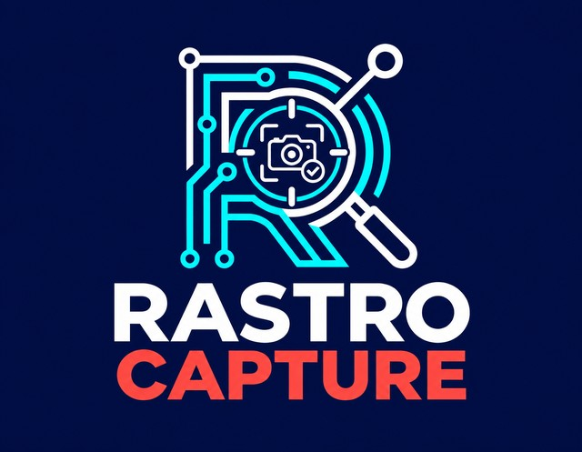

Analizar contenido
SIN ANALIZARCapturar
El grabador documenta vídeos que no se pueden descargar directamente (HLS/DASH, fuentes internas) o una navegación.
Cargar más contenido
Desplaza la página automáticamente para cargar más publicaciones de un perfil (o contenido diferido) antes de capturar o descargar.
Publicaciones detectadas
0
Multimedia de esta página
0
Evidencias de la sesión
0 BCada archivo conserva sus bytes sin modificar. El SHA-256 se calcula al incorporarlo y se recalcula al exportar. Eliminar una evidencia queda anotado en el registro.
Personalización institucional
SE CONSERVA
Datos de tu unidad, reutilizables entre sesiones. Aparecen en el encabezado de los informes. Se guardan solo en este navegador.
Datos del expediente
SOLO ESTA SESIÓN
Datos específicos de esta investigación. Se vacían al iniciar una sesión nueva. La referencia y las diligencias se editan en la cabecera.
Informes
Ambos informes comparten los mismos datos y evidencias. El visor permite revisarlos, imprimirlos o guardarlos como HTML autónomo o PDF.
Exportar paquete de evidencias
El paquete contiene evidencias/, informes/, registros/, metadatos/manifest.json y README_EVIDENCIAS.txt. Antes de exportar se recalcula el hash de cada archivo.
Almacenamiento local
- Evidencias en esta sesión
- —
- Espacio usado por la extensión
- —
- Entradas del registro de actividad
- —
Qué permanece en este navegador: las evidencias y su registro (hasta que inicies una sesión nueva), los datos del expediente en curso, el perfil institucional con su escudo y estas preferencias. Nada se envía a servidores. Las copias en Descargas y los ZIP exportados son archivos tuyos: la extensión no los borra.
Seguridad y permisos
- Acceso a todos los sitios (opcional)
- —
Instagram y TikTok están permitidos de forma fija. Para otras webs el navegador pide permiso cuando hace falta. Puedes retirar aquí el permiso general.
- Procesamiento local; sin telemetría ni servicios externos.
- No se leen ni exportan cookies, contraseñas ni tokens de sesión.
- No se eluden autenticación, controles de acceso ni DRM.
- El escudo se rasteriza al cargarlo: un SVG nunca se guarda ni se incrusta con contenido activo.

RASTRO CAPTURE
Kit RASTRO — Herramientas de Investigación de Fuentes Abiertas